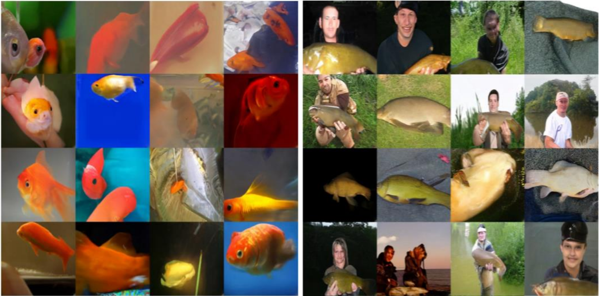
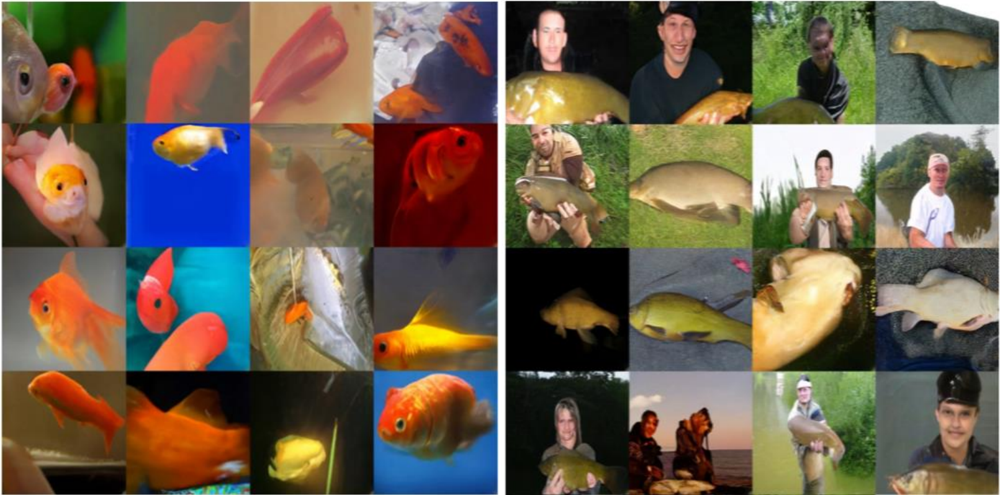

§ 11. Variational Autoencoders
Prerequisites : Ch A. Appendix - Basics of Monte Carlo
Concept 11.1 : Math Review : Conditional Probabilities
Let \(A\) and \(B\) be probabilistic events. Assume \(A\) has nonzero probability.
Conditional probability satisfies
\[
\mathbb{P}(B \mid A) \mathbb{P}(A)=\mathbb{P}(A \cap B)
\]
Bayes' theorem is an application of conditional probability:
\[
\mathbb{P}(B \mid A)=\frac{\mathbb{P}(A \mid B) \mathbb{P}(B)}{\mathbb{P}(A)}
\]
Concept 11.2 : Math Review: Conditional Densities
Let \(X \in \mathbb{R}^{m}\) and \(Z \in \mathbb{R}^{n}\) be continuous random variables with joint density \(p(x, z)\).
The marginal densities are defined by
\[
p_{X}(x)=\int_{\mathbb{R}^{n}} p(x, z) d z, \quad p_{Z}(z)=\int_{\mathbb{R}^{m}} p(x, z) d x
\]
The conditional density function \(p(z \mid x)\) has the following properties
\[
\begin{gathered}
\mathbb{P}(Z \in S \mid X=x)=\int_{S} p(z \mid x) d z \\
p(z \mid x) p_{X}(x)=p(x, z), \quad p(z \mid x)=\frac{p(x \mid z) p_{Z}(z)}{p_{X}(x)}
\end{gathered}
\]
Concept 11.3 : Introduction for Variational Autoencoders (VAE)
Key idea of VAE:
- Latent variable model with conditional probability distribution represented by \(p_{\theta}(x \mid z)\).
- Efficiently estimate \(p_{\theta}(x)=\mathbb{E}_{Z \sim p_{Z}}\left[p_{\theta}(x \mid Z)\right]\) by importance sampling with \(Z \sim q_{\phi}(z \mid x)\).
We can interpret \(q_{\phi}(z \mid x)\) as an encoder and \(p_{\theta}(x \mid z)\) as a decoder.
VAEs differ from autoencoders as follows:
- Derivations (latent variable model vs. dimensionality reduction)
- VAE regularizes/controls latent distribution, while AE does not.
{: width="80%"}
These are synthetic (fake) images made with VAE.
(A. Vahdat and J. Kautz, NVAE: A deep hierarchical variational autoencoder, NeurIPS, 2020.)
Latent Variable Model
-
Assumption on data \(X_{1}, \ldots, X_{N}\)
Assumes there is an underlying latent variable \(Z\) representing the "essential structure" of the data and an observable variable \(X\) which generation is conditioned on \(Z\). Implicitly assumes the conditional randomness of \(X \sim p_{X \mid Z}\) is significantly smaller than the overall randomness \(X \sim p_{X}\).
-
Example
\(X\) is a cat picture. \(Z\) encodes information about the body position, fur color, and facial expression of a cat. Latent variable \(Z\) encodes the overall content of the image, but \(X\) does contain details not specified in \(Z\).
Definition 11.4 : Latent Variable Model
VAEs implements a latent variable model with a NN that generates \(X\) given \(Z\). More precisely, NN is a deterministic function that outputs the conditional distribution \(p_{\theta}(x \mid Z)\), and \(X\) is randomly generated according to this distribution. This structure may effectively learn the latent structure from data if the assumption on data is accurate.

Sampling process:
\[
X \sim p_{\theta}(x \mid Z), \quad Z \sim p_{Z}(z)
\]
Usually \(p_{Z}\) is a Gaussian (fixed) and \(p_{\theta}(x \mid z)\) is a NN parameterized by \(\theta\).
Evaluating density (likelihood):
\[
p_{\theta}\left(X_{i}\right)=\int_{z} p_{Z}(z) p_{\theta}\left(X_{i} \mid z\right) d z=\mathbb{E}_{Z \sim p_{Z}}\left[p_{\theta}\left(X_{i} \mid Z\right)\right]
\]
Training via MLE:
\[
\underset{\theta \in \Theta}{\operatorname{maximize}} \sum_{i=1}^{N} \log p_{\theta}\left(X_{i}\right)=\underset{\theta \in \Theta}{\operatorname{maximize}} \sum_{i=1}^{N} \log \mathbb{E}_{Z \sim p_{Z}}\left[p_{\theta}\left(X_{i} \mid Z\right)\right]
\]
When \(p_{Z}\) is a discrete:
\[
p_{\theta}(x)=\mathbb{E}_{Z \sim p_{Z}}\left[p_{\theta}(x \mid Z)\right]=\sum_{z} p_{Z}(z) p_{\theta}(x \mid Z)
\]
When \(p_{Z}\) is a continuous:
\[
p_{\theta}(x)=\mathbb{E}_{Z \sim p_{Z}}\left[p_{\theta}(x \mid Z)\right]=\int_{z} p_{Z}(z) p_{\theta}(x \mid z) d z
\]
To clarify, specification of \(p_{Z}(z)\) and \(p_{\theta}(x \mid z)\) fully determines \(p_{\theta}(x)\) (as above) and
\[
p_{\theta}(z \mid x)=\frac{p_{\theta}(x \mid z) p_{Z}(z)}{p_{\theta}(x)}
\]
Training
\[
\underset{\theta \in \Theta}{\operatorname{maximize}} \sum_{i=1}^{N} \log p_{\theta}\left(X_{i}\right)=\underset{\theta \in \Theta}{\operatorname{maximize}} \sum_{i=1}^{N} \log \mathbb{E}_{Z \sim p_{Z}}\left[p_{\theta}\left(X_{i} \mid Z\right)\right]
\]
requires evaluation \(\mathbb{E}_{Z}\).
- Scenario 1: If \(Z\) is discrete and takes a few of values, then compute \(\sum_{z}\) exactly.
- Scenario 2: If \(Z\) takes many values or if it is a continuous, then \(\sum_{z}\) or \(\mathbb{E}_{Z}\) is impractical to compute. In this case, approximate expectation with Monte Carlo and importance sampling.
Example 11.5 : Example Latent Variable Model: Mixture of Gaussians
Mixture of 3 Gaussians in \(\mathbb{R}^{2}\), uniform prior over components. (We can make the mixture weights a trainable parameter.)
\[
\begin{gathered}
p_{Z}(Z=A)=p_{Z}(Z=B)=p_{Z}(Z=C)=\frac{1}{3} \\
p_{\theta}(x \mid Z=k)=\frac{1}{2 \pi\left|\Sigma_{k}\right|^{\frac{1}{2}}} \exp \left(-\frac{1}{2}\left(x-\mu_{k}\right)^{\top} \Sigma_{k}^{-1}\left(x-\mu_{k}\right)\right)
\end{gathered}
\]
Training objective:
\[
\begin{aligned}
\underset{\mu, \Sigma}{\operatorname{maximize}} \sum_{i=1}^{N} \log p_{\theta}\left(X_{i}\right)=\underset{\mu, \Sigma}{\operatorname{maximize}} \sum_{i=1}^{N} \log & \left[ \frac{1}{3} \frac{1}{2 \pi\left|\Sigma_{A}\right|^{\frac{1}{2}}} \exp \left(-\frac{1}{2}\left(X_{i}-\mu_{A}\right)^{\top} \Sigma_{A}^{-1}\left(X_{i}-\mu_{A}\right)\right) \right.\\
& +\frac{1}{3} \frac{1}{2 \pi\left|\Sigma_{B}\right|^{\frac{1}{2}}} \exp \left(-\frac{1}{2}\left(X_{i}-\mu_{B}\right)^{\top} \Sigma_{B}^{-1}\left(X_{i}-\mu_{B}\right)\right) \\
& \left.+\frac{1}{3} \frac{1}{2 \pi\left|\Sigma_{C}\right|^{\frac{1}{2}}} \exp \left(-\frac{1}{2}\left(X_{i}-\mu_{C}\right)^{\top} \Sigma_{C}^{-1}\left(X_{i}-\mu_{C}\right)\right)\right]
\end{aligned}
\]

Training Latent Variable Model with Importance Sampling
From now on, we will focus on HOW to train latent variable model with MLE,
\[
\underset{\theta \in \Theta}{\operatorname{maximize}} \sum_{i=1}^{N} \log p_{\theta}\left(X_{i}\right)=\underset{\theta \in \Theta}{\operatorname{maximize}} \sum_{i=1}^{N} \log \mathbb{E}_{Z \sim p_{Z}}\left[p_{\theta}\left(X_{i} \mid Z\right)\right]
\]
Concept 11.6 : VAE Outline
Outline of variational autoencoder (VAE):
-
(Choice 1) Approximate intractable objective with a single \(Z\) sample
\[
\sum_{i=1}^{N} \log \mathbb{E}_{Z \sim p_{Z}}\left[p_{\theta}\left(X_{i} \mid Z\right)\right] \approx \sum_{i=1}^{N} \log p_{\theta}\left(X_{i} \mid Z_{i}\right), \quad Z_{i} \sim p_{Z}
\]
-
(Choice 2) Improve accuracy of approximation by sampling \(Z_{i}\) with importance sampling
\[
\sum_{i=1}^{N} \log \mathbb{E}_{Z \sim p_{Z}}\left[p_{\theta}\left(X_{i} \mid Z\right)\right] \approx \sum_{i=1}^{N} \log \frac{p_{\theta}\left(X_{i} \mid Z_{i}\right) p_{Z}\left(Z_{i}\right)}{q_{i}\left(Z_{i}\right)}, \quad Z_{i} \sim q_{i}
\]
-
Optimize approximate objective with SGD.
(D. Kingma and M. Welling, VAE: Auto-encoding variational Bayes, ICLR, 2014.)
Concept 11.7 : IWAE Outline
Importance weighted autoencoders (IWAE) approximates intractable with \(K\) samples of \(Z\) :
\[
\sum_{i=1}^{N} \log \mathbb{E}_{Z \sim p_{Z}}\left[p_{\theta}\left(X_{i} \mid Z\right)\right] \approx \sum_{i=1}^{N} \log \frac{1}{K} \sum_{k=1}^{K} \frac{p_{\theta}\left(X_{i} \mid Z_{i, k}\right) p_{Z}\left(Z_{i, k}\right)}{q_{i}\left(Z_{i, k}\right)}, \quad Z_{i, 1}, \ldots, Z_{i, K} \sim q_{i}
\]
(Y. Burda, R. Grosse, and R. Salakhutdinov, Importance weighted autoencoders, ICLR, 2016.)
Concept 11.8 : Why does VAE need IS?
Among the two choices given in Concept 11.6, VAEs improve the accuracy of latent variable model with IS (Choice 2).
Sampling \(Z_{i} \sim p_{Z}\) (Choice 1) results in a high-variance estimator:
\[
\mathbb{E}_{Z \sim p_{Z}}\left[p_{\theta}\left(X_{i} \mid Z\right)\right] \approx p_{\theta}\left(X_{i} \mid Z_{i}\right),
\]
In the Gaussian mixture example (Example 11.5), only \(1 / 3\) of the \(Z\) samples meaningfully contribute to the estimate. More specifically, if \(X_{i}\) is near \(\mu_{A}\) but is far from \(\mu_{B}\) and \(\mu_{C}\), then \(p_{\theta}\left(X_{i} \mid Z=A\right) \gg 0\) but \(p_{\theta}\left(X_{i} \mid Z=B\right) \approx 0\) and \(p_{\theta}\left(X_{i} \mid Z=C\right) \approx 0\).
The issue worsens as the observable and latent variable dimension increases.
Concept 11.9 : Naïve Approach : Naïvely using IS for each \(X_{i}\)
To improve estimation of \(\mathbb{E}_{Z \sim p_{Z}}\left[p_{\theta}\left(X_{i} \mid Z\right)\right]\), consider importance sampling (IS) with sampling distribution \(Z_{i} \sim q_{i}(z)\) :
\[
\mathbb{E}_{Z \sim p_{Z}}\left[p_{\theta}\left(X_{i} \mid Z\right)\right] \approx p_{\theta}\left(X_{i} \mid Z_{i}\right) \frac{p_{Z}\left(Z_{i}\right)}{q_{i}\left(Z_{i}\right)}
\]
Optimal IS sampling distribution
\[
q_{i}^{\star}(z)=\frac{p_{\theta}\left(X_{i} \mid z\right) p_{Z}(z)}{\textcolor{red}{p_{\theta}\left(X_{i}\right)}}=\textcolor{red}{p_{\theta}\left(z \mid X_{i}\right)}
\]
To clarify, optimal sampling distribution depends on \(X_{i}\).
To clarify, \(\textcolor{red}{p_{\theta}\left(X_{i}\right)}\) is the unkown normalizing factor so \(\textcolor{red}{p_{\theta}\left(z \mid X_{i}\right)}\) is also unkown.
We call \(q_{i}^{\star}(z)=p_{\theta}\left(z \mid X_{i}\right)\) the true posterior distribution and we will soon consider the approximation \(q_{\phi}(z \mid x) \approx p_{\theta}(z \mid x)\), which we call the approximate posterior.
For each \(X_{i}\), let \(q_i(z)\) be the optimal approximate posterior dependent on \(X_i\), and consider
\[
\begin{gathered}
\underset{q_{i}}{\operatorname{minimize}} D_{\mathrm{KL}}\left(q_{i}(\cdot) \| \textcolor{red}{p_{\theta}\left(\cdot \mid X_{i}\right)} \right)\\
=\underset{q_{i}}{\operatorname{minimize}} \mathbb{E}_{Z \sim q_{i}} \log \left(\frac{q_{i}(Z)}{\textcolor{red}{p_{\theta}\left(Z \mid X_{i}\right)}}\right) \\
=\underset{q_{i}}{\operatorname{minimize}} \mathbb{E}_{Z \sim q_{i}} \log \left(\frac{q_{i}(Z)}{p_{\theta}\left(X_{i} \mid Z\right) p_{Z}(Z) / \textcolor{red}{p_{\theta}\left(X_{i}\right)}}\right) \\
=\underset{Z \sim q_{i}}{\operatorname{minimize}}\left[\log q_{i}(Z)-\log p_{Z}(Z)-\log p_{\theta}\left(X_{i} \mid Z\right)\right]+\textcolor{red}{\log p_{\theta}\left(X_{i}\right)}
\end{gathered}
\]
Note, \(q_{i}(z), p_{Z}(z)\), and \(p_{\theta}(x \mid z)\) are tractable/known while \(\textcolor{red}{p_{\theta}\left(X_{i}\right)}\) and \(\textcolor{red}{p_{\theta}\left(z \mid X_{i}\right)}\) are intractable/unknown. Since \(\textcolor{red}{\log p_{\theta}\left(X_{i}\right)}\) does not depend on \(q_{i}\), all quantities needed in the optimization problems are tractable. However, solving this minimization problem to obtain each \(q_{i}\) for each data point \(X_{i}\) is computationally too expensive.
Individual inference (not amortized): For each \(X_{1}, \ldots, X_{N}\), find corresponding optimal \(q_{1}, \ldots, q_{N}\) by solving
\[
\underset{q_{i}}{\operatorname{minimize}} \quad D_{\mathrm{KL}}\left(q_{i}(\cdot) \| p_{\theta}\left(\cdot \mid X_{i}\right)\right)
\]
This is expensive as it requires solving \(N\) separate optimization problems.
We need variational approach and amortized inference.
Concept 11.10 : Variational Approach and Amortized Inference
General principle of variational approach: We can't directly use the \(q\) we want. So, instead, we propose a parameterized distribution \(q_{\phi}\) that we can work with easily (in this case, sample from easily), and find a parameter setting that makes it as good as possible.
Parametrization of VAE:
\[
q_{\phi}\left(z \mid X_{i}\right) \approx q_{i}^{\star}(z)=p_{\theta}\left(z \mid X_{i}\right) \quad \text { for all } i=1, \ldots, N
\]
Amortized inference: Train a neural network \(q_{\phi}(\cdot \mid x)\) such that \(q_{\phi}\left(\cdot \mid X_{i}\right)\) approximates the optimal \(q_{i}(\cdot)\).
\[
\underset{\phi \in \Phi}{\operatorname{minimize}} \sum_{i=1}^{N} D_{\mathrm{KL}}\left(q_{\phi}\left(\cdot \mid X_{i}\right) \| p_{\theta}\left(\cdot \mid X_{i}\right)\right)
\]
Approximation \(q_{\phi}\left(z \mid X_{i}\right) \approx p_{\theta}\left(z \mid X_{i}\right)\) is often less precise than that of individual inference \(q_{i}(z) \approx\) \(p_{\theta}\left(z \mid X_{i}\right)\), but amortized inference is often significantly faster.
Concept 11.11 : Encoder \(q_{\phi}\) Optimization
In analogy with autoencoders, we call \(q_{\phi}\) the encoder.
Optimization problem for encoder (derived from Concept 11.9) :
\[
\begin{aligned}
& \underset{\phi \in \Phi}{\operatorname{minimize}} \sum_{i=1}^{N} D_{\mathrm{KL}}\left(q_{\phi}\left(\cdot \mid X_{i}\right) \| p_{\theta}\left(\cdot \mid X_{i}\right)\right) \\
= & \underset{\phi \in \Phi}{\operatorname{maximize}} \sum_{i=1}^{N} \mathbb{E}_{Z \sim q_{\phi}\left(z \mid X_{i}\right)}\left[\log \left(\frac{p_{\theta}\left(X_{i} \mid Z\right) p_{Z}(Z)}{q_{\phi}\left(Z \mid X_{i}\right)}\right)\right]+\text { constant independent of } \phi \\
= & \underset{\phi \in \Phi}{\operatorname{maximize}} \sum_{i=1}^{N} \mathbb{E}_{Z \sim q_{\phi}\left(z \mid X_{i}\right)}\left[\log p_{\theta}\left(X_{i} \mid Z\right)\right]-D_{\mathrm{KL}}\left(q_{\phi}\left(\cdot \mid X_{i}\right) \| p_{Z}(\cdot)\right)
\end{aligned}
\]
Concept 11.12 : Decoder \(p_{\theta}\) Optimization
In analogy with autoencoders, we call \(p_{\theta}\) the decoder.
Perform approximate MLE (derived from IS, Choice 2 of Concept 11.6) :
\[
\begin{aligned}
& \underset{\theta \in \Theta}{\operatorname{maximize}} \sum_{i=1}^{N} \log p_{\theta}\left(X_{i}\right)=\underset{\theta \in \Theta}{\operatorname{maximize}} \sum_{i=1}^{N} \log \mathbb{E}_{Z \sim p_{Z}}\left[p_{\theta}\left(X_{i} \mid Z\right)\right] \\
\stackrel{(a)}{\approx} & \underset{\theta \in \Theta}{\operatorname{maximize}} \sum_{i=1}^{N} \log \left(\frac{p_{\theta}\left(X_{i} \mid Z_{i}\right) p_{Z}\left(Z_{i}\right)}{q_{\phi}\left(Z_{i} \mid X_{i}\right)}\right), \quad Z_{i} \sim q_{\phi}\left(z \mid X_{i}\right) \\
\stackrel{(b)}{\approx} & \underset{\theta \in \Theta}{\operatorname{maximize}} \sum_{i=1}^{N} \mathbb{E}_{Z \sim q_{\phi}\left(z \mid X_{i}\right)}\left[\log \left(\frac{p_{\theta}\left(X_{i} \mid Z\right) p_{Z}(Z)}{q_{\phi}\left(Z \mid X_{i}\right)}\right)\right] \\
= & \underset{\theta \in \Theta}{\operatorname{maximize}} \sum_{i=1}^{N} \mathbb{E}_{Z \sim q_{\phi}\left(z \mid X_{i}\right)}\left[\log p_{\theta}\left(X_{i} \mid Z\right)\right]-D_{\mathrm{KL}}\left(q_{\phi}\left(\cdot \mid X_{i}\right) \| p_{Z}(\cdot)\right)
\end{aligned}
\]
The \(\stackrel{(a)}{\approx}\) step replaces expectation inside the log with an estimate with \(Z_{i}\).
The \(\stackrel{(b)}{\approx}\) step replaces the random variable with the expectation.
These steps take \(\mathbb{E}_{Z}\) outside of the log (which can not be normally done).
More on this later (Concept 11.14).
Definition of VAE
Definition 11.13 : Variational Lower Bound (VLB)
The optimization objectives for the encoder (Concept 11.11) and decoder (Concept 11.12) are the same!
Simultaneously train \(p_{\theta}\) and \(q_{\phi}\) by solving
\[
\underset{\theta \in \Theta, \phi \in \Phi}{\operatorname{maximize}} \sum_{i=1}^{N} \underbrace{\mathbb{E}_{Z \sim q_{\phi}\left(z \mid X_{i}\right)}\left[\log p_{\theta}\left(X_{i} \mid Z\right)\right]-D_{\mathrm{KL}}\left(q_{\phi}\left(\cdot \mid X_{i}\right) \| p_{Z}(\cdot)\right)}_{\stackrel{\text { def }}{=} \mathrm{VLB}_{\theta, \phi}\left(X_{i}\right)}
\]
We refer to the optimization objective as the variational lower bound (VLB) or evidence lower bound (ELBO) for reasons that will be explained soon (Concept 11.14).
Concept 11.14 : How tight lower bound is the VLB?
How accurate is the approximation?
\[
\begin{aligned}
& \underset{\theta \in \Theta}{\operatorname{maximize}} \sum_{i=1}^{N} \log p_{\theta}\left(X_{i}\right)=\underset{\theta \in \Theta}{\operatorname{maximize}} \sum_{i=1}^{N} \log \mathbb{E}_{Z \sim q_{\phi}\left(z \mid X_{i}\right)}\left[\frac{p_{\theta}\left(X_{i} \mid Z\right) p_{Z}(Z)}{q_{\phi}\left(Z \mid X_{i}\right)}\right] \\
& \stackrel{?}{\approx} \underset{\theta \in \Theta, \phi \in \Phi}{\operatorname{maximize}} \sum_{i=1}^{N} \mathbb{E}_{Z \sim q_{\phi}\left(z \mid X_{i}\right)}\left[\log \left(\frac{p_{\theta}\left(X_{i} \mid Z\right) p_{Z}(Z)}{q_{\phi}\left(Z \mid X_{i}\right)}\right)\right] \\
&=\underset{\theta \in \Theta, \phi \in \Phi}{\operatorname{maximize}} \sum_{i=1}^{N} \operatorname{VLB}_{\theta, \phi}\left(X_{i}\right)
\end{aligned}
\]
This turns out that
\[
\log p_{\theta}\left(X_{i}\right) \geq \operatorname{VLB}_{\theta, \phi}\left(X_{i}\right)
\]
So we are maximizing a lower bound of the log likelihood. How large is the gap?
- Log-likelihood \(\geq\) VLB: Derivation 1
Proof
Derivation via Jensen inequality:
\[
\begin{aligned}
\log p_{\theta}\left(X_{i}\right) & =\log \mathbb{E}_{Z \sim p_{Z}}\left[p_{\theta}\left(X_{i} \mid Z\right)\right] \\
& =\log \left(\mathbb{E}_{Z \sim q_{\phi}\left(Z \mid X_{i}\right)}\left[p_{\theta}\left(X_{i} \mid Z\right) \frac{p_{Z}(Z)}{q_{\phi}\left(Z \mid X_{i}\right)}\right]\right) \\
& \geq \mathbb{E}_{Z \sim q_{\phi}\left(Z \mid X_{i}\right)}\left[\log \left(p_{\theta}\left(X_{i} \mid Z\right) \frac{p_{Z}(Z)}{q_{\phi}\left(Z \mid X_{i}\right)}\right)\right] \\
& \stackrel{\text { def }}{=} \mathrm{VLB}_{\theta, \phi}\left(X_{i}\right)
\end{aligned}
\]
Does not explicitly characterize gap.
- Log-likelihood \(\geq\) VLB: Derivation 2
Proof
Derivation via KL divergence:
\[
\begin{aligned}
D_{\mathrm{KL}}\left[q_{\phi}\left(\cdot \mid X_{i}\right) \| p_{\theta}\left(\cdot \mid X_{i}\right)\right] & =\mathbb{E}_{Z \sim q_{\theta}\left(z \mid X_{i}\right)}\left[\log q_{\theta}\left(Z \mid X_{i}\right)-\log p_{\theta}\left(Z \mid X_{i}\right)\right] \\
& =\underbrace{\mathbb{E}_{Z \sim q_{\theta}\left(z \mid X_{i}\right)}\left[\log q_{\theta}\left(Z \mid X_{i}\right)-\log p_{Z}(Z)-\log p_{\theta}\left(X_{i} \mid Z\right)\right]}_{=-\mathrm{VLB}_{\theta, \phi}\left(X_{i}\right)}+\log p_{\theta}\left(X_{i}\right)
\end{aligned}
\]
and
\[
\begin{aligned}
\log p_{\theta}\left(X_{i}\right) &= \operatorname{VLB}_{\theta, \phi}\left(X_{i}\right)+\underbrace{D_{\mathrm{KL}}\left[q_{\phi}\left(\cdot \mid X_{i}\right) \| p_{\theta}\left(\cdot \mid X_{i}\right)\right]}_{\geq 0} \\
& \geq \operatorname{VLB}_{\theta, \phi}\left(X_{i}\right)
\end{aligned}
\]
This derivation explicitly characterizes the gap as \(D_{\mathrm{KL}}\left[q_{\phi}\left(\cdot \mid X_{i}\right) \| p_{\theta}\left(\cdot \mid X_{i}\right)\right]\).
\[
\log p_{\theta}\left(X_{i}\right) - \operatorname{VLB}_{\theta, \phi}\left(X_{i}\right) = D_{\mathrm{KL}}\left[q_{\phi}\left(\cdot \mid X_{i}\right) \| p_{\theta}\left(\cdot \mid X_{i}\right)\right]
\]
Concept 11.15 : VLB is tight if encoder is infinitely powerful.
If the encoder \(q_{\phi}\) is powerful enough such that there is a \(\phi^{\star}\) achieving
\[
q_{\phi^{\star}}\left(\cdot \mid X_{i}\right)=p_{\theta}\left(\cdot \mid X_{i}\right)
\]
or equivalently
\[
D_{\mathrm{KL}}\left[q_{\phi^{\star}}\left(\cdot \mid X_{i}\right) \| p_{\theta}\left(\cdot \mid X_{i}\right)\right]=0
\]
Then
\[
\underset{\theta \in \Theta}{\operatorname{maximize}} \sum_{i=1}^{N} \log p_{\theta}\left(X_{i}\right)=\underset{\theta \in \Theta, \phi \in \Phi}{\operatorname{maximize}} \sum_{i=1}^{N} \operatorname{VLB}_{\theta, \phi}\left(X_{i}\right)
\]
Definition 11.16 : Variational Autoencoder (VAE) Terminology

- Likelihood : \(\textcolor{red}{p_{\theta}(x)}\) (exact evaluation intractable)
- Prior : \(p_{Z}(z)\)
- Conditional distribution (decoder) : \(p_{\theta}(x \mid z)\)
- True posterior : \(\textcolor{red}{p_{\theta}(z \mid x)}\) (exact evaluation intractable)
- Approximate posterior (encoder) : \(q_{\phi}(z \mid x)\)
Conditional distribution \(p_{\theta}(x \mid z)\) and prior \(p_{Z}(z)\) determines the posterior \(p_{\theta}(z \mid x)\).
There is no easy way to evaluate \(p_{\theta}(x)\), but we can sample \(X \sim p_{\theta}(x)\) easily: \(Z \sim p_{Z}(z)\) then \(X \sim p_{\theta}(x \mid Z)\).
NN in VAE do not directly generate random output. NN outputs parameters for random sampling.
VAE Standard Instance
Definition 11.17 : VAE Standard Instance
A standard VAE setup:
\[
\begin{aligned}
& p_{Z}=\mathcal{N}(0, I) \\
& q_{\phi}(z \mid x)=\mathcal{N}\left(\mu_{\phi}(x), \Sigma_{\phi}(x)\right) \text { with diagonal } \Sigma_{\phi} \\
& p_{\theta}(x \mid z)=\mathcal{N}\left(f_{\theta}(z), \sigma^{2} I\right)
\end{aligned}
\]
\(\mu_{\phi}(x), \Sigma_{\phi}^{2}(x)\), and \(f_{\theta}(z)\) are deterministic NN.
Using the following equation,
\[
\begin{aligned}
& D_{\mathrm{KL}}\left(\mathcal{N}\left(\mu_{\phi}(X), \Sigma_{\phi}(X)\right) \| \mathcal{N}(0, I)\right) \\
= & \frac{1}{2}\left(\operatorname{tr}\left(\Sigma_{\phi}(X)\right)+\left\|\mu_{\phi}(X)\right\|^{2}-d-\log \operatorname{det}\left(\Sigma_{\phi}(X)\right)\right) \\
\end{aligned}
\]
the training objective
\[
\underset{\theta \in \Theta, \phi \in \Phi}{\operatorname{maximize}} \sum_{i=1}^{N} \mathbb{E}_{Z \sim q_{\phi}\left(z \mid X_{i}\right)}\left[\log p_{\theta}\left(X_{i} \mid Z\right)\right]-D_{\mathrm{KL}}\left(q_{\phi}\left(\cdot \mid X_{i}\right) \| p_{Z}(\cdot)\right)
\]
becomes
\[
\underset{\theta \in \Theta, \phi \in \Phi}{\operatorname{minimize}} \sum_{i=1}^{N} \frac{1}{\sigma^{2}} \mathbb{E}_{Z \sim \mathcal{N}\left(\mu_{\phi}\left(X_{i}\right), \Sigma_{\phi}\left(X_{i}\right)\right)}\left\|X_{i}-f_{\theta}(Z)\right\|^{2}+\operatorname{tr}\left(\Sigma_{\phi}\left(X_{i}\right)\right)+\left\|\mu_{\phi}\left(X_{i}\right)\right\|^{2}-\log \operatorname{det}\left(\Sigma_{\phi}\left(X_{i}\right)\right)
\]
Concept 11.18 : VAE Standard Instance with Reparameterization Trick
The standard instance of VAE
\[
\underset{\theta \in \Theta, \phi \in \Phi}{\operatorname{minimize}} \sum_{i=1}^{N} \frac{1}{\sigma^{2}} \mathbb{E}_{Z \sim \mathcal{N}\left(\mu_{\phi}\left(X_{i}\right), \Sigma_{\phi}\left(X_{i}\right)\right)}\left\|X_{i}-f_{\theta}(Z)\right\|^{2}+\operatorname{tr}\left(\Sigma_{\phi}\left(X_{i}\right)\right)+\left\|\mu_{\phi}\left(X_{i}\right)\right\|^{2}-\log \operatorname{det}\left(\Sigma_{\phi}\left(X_{i}\right)\right)
\]
can be equivalently written with the reparameterization trick
\[
\underset{\theta \in \Theta, \phi \in \Phi}{\operatorname{minimize}} \sum_{i=1}^{N} \frac{1}{\sigma^{2}} \mathbb{E}_{\varepsilon \sim \mathcal{N}(0, I)}\left\|X_{i}-f_{\theta}\left(\mu_{\phi}\left(X_{i}\right)+\Sigma_{\phi}^{1 / 2}\left(X_{i}\right) \varepsilon\right)\right\|^{2}+\operatorname{tr}\left(\Sigma_{\phi}\left(X_{i}\right)\right)+\left\|\mu_{\phi}\left(X_{i}\right)\right\|^{2}-\log \operatorname{det}\left(\Sigma_{\phi}\left(X_{i}\right)\right)
\]
where \(\Sigma_{\phi}^{1 / 2}\) is diagonal with \(\sqrt{\cdot}\) of the diagonal elements of \(\Sigma_{\phi}\).
(Remember, \(\Sigma_{\phi}\) is diagonal.)
To clarify \(Z \stackrel{\mathcal{D}}{=} \mu_{\phi}\left(X_{i}\right)+\Sigma_{\phi}^{1 / 2}\left(X_{i}\right) \varepsilon\), where \(\stackrel{\mathcal{D}}{=}\) denotes equality in distribution.
We now have an objective amenable to stochastic optimization.
Concept 11.19 : VAE Standard Instance Architecture
- Training (Without reparameterization trick)

- Training (With reparameterization trick)


Concept 11.20 : Why variational "autoencoder"?
VAE loss (VLB) contains a reconstruction loss resembling that of an autoencoder.
\[
\begin{aligned}
\operatorname{VLB}_{\theta, \phi}\left(X_{i}\right) & =\mathbb{E}_{Z \sim q_{\phi}\left(z \mid X_{i}\right)}\left[\log p_{\theta}\left(X_{i} \mid Z\right)\right]-D_{\mathrm{KL}}\left(q_{\phi}\left(\cdot \mid X_{i}\right) \| p_{Z}(\cdot)\right) \\
& =-\frac{1}{2 \sigma^{2}} \mathbb{E}_{Z \sim q_{\phi}\left(z \mid X_{i}\right)}\left[\left\|X_{i}-f_{\theta}(Z)\right\|^{2}\right]-D_{\mathrm{KL}}\left(q_{\phi}\left(\cdot \mid X_{i}\right) \| p_{Z}(\cdot)\right) \\
& =-\underbrace{\frac{1}{2 \sigma^{2}} \mathbb{E}_{\varepsilon \sim \mathcal{N}(0, I)}\left\|X_{i}-f_{\theta}\left(\mu_{\phi}\left(X_{i}\right)+\Sigma_{\phi}^{1 / 2}\left(X_{i}\right) \varepsilon\right)\right\|^{2}}_{\text {Reconstruction loss }}-\underbrace{D_{\mathrm{KL}}\left(q_{\phi}\left(\cdot \mid X_{i}\right) \| p_{Z}(\cdot)\right)}_{\text {Regularization }}
\end{aligned}
\]
VLB also contains a regularization term on the output of the encoder, which is not present in standard autoencoder losses.
The choice of \(\sigma\) determines the relative weight between the reconstruction loss and the regularization.
Training VAE
Concept 11.21 : Training VAE with RT
To obtain stochastic gradients of the VAE standard instance
\[
\underset{\theta \in \Theta, \phi \in \Phi}{\operatorname{minimize}} \sum_{i=1}^{N} \frac{1}{\sigma^{2}} \mathbb{E}_{\varepsilon \sim \mathcal{N}(0, I)}\left\|X_{i}-f_{\theta}\left(\mu_{\phi}\left(X_{i}\right)+\Sigma_{\phi}^{1 / 2}\left(X_{i}\right) \varepsilon\right)\right\|^{2}+\operatorname{tr}\left(\Sigma_{\phi}\left(X_{i}\right)\right)+\left\|\mu_{\phi}\left(X_{i}\right)\right\|^{2}-\log \operatorname{det}\left(\Sigma_{\phi}\left(X_{i}\right)\right)
\]
select a data \(X_{i}\), sample \(\varepsilon_{i} \sim \mathcal{N}(0, I)\), evaluate
\[
-\operatorname{VLB}_{\theta, \phi}\left(X_{i}, \varepsilon_{i}\right) \stackrel{\text { def }}{=} \frac{1}{\sigma^{2}}\left\|X_{i}-f_{\theta}\left(\mu_{\phi}\left(X_{i}\right)+\Sigma_{\phi}^{1 / 2}\left(X_{i}\right) \varepsilon_{i}\right)\right\|^{2}+\operatorname{tr}\left(\Sigma_{\phi}\left(X_{i}\right)\right)+\left\|\mu_{\phi}\left(X_{i}\right)\right\|^{2}-\log \operatorname{det}\left(\Sigma_{\phi}\left(X_{i}\right)\right)
\]
and backprop on \(\operatorname{VLB}_{\theta, \phi}\left(X_{i}, \varepsilon_{i}\right)\).
Usually, batch of \(X_{i}\) is selected.
One can sample multiple \(Z_{i, 1}, \ldots, Z_{i, K}\) (equivalently \(\varepsilon_{i, 1}, \ldots, \varepsilon_{i, K}\) ) for each \(X_{i}\).
Concept 11.22 : Traning VAE with Log-Derivative Trick
Computing stochastic gradients without the reparameterization trick.
\[
\underset{\theta \in \Theta, \phi \in \Phi}{\operatorname{maximize}} \sum_{i=1}^{N} \underbrace{\mathbb{E}_{Z \sim q_{\phi}\left(z \mid X_{i}\right)}\left[\log \left(\frac{p_{\theta}\left(X_{i} \mid Z\right) p_{Z}(Z)}{q_{\phi}\left(Z \mid X_{i}\right)}\right)\right]}_{\stackrel{\text { def }}{=} \operatorname{VLB}_{\theta, \phi}\left(X_{i}\right)}
\]
To obtain unbiased estimates of \(\nabla_{\theta}\), compute
\[
\frac{1}{K} \sum_{k=1}^{K} \log p_{\theta}\left(X_{i} \mid Z_{i, k}\right), \quad Z_{i, 1}, \ldots, Z_{i, K} \sim q_{\phi}\left(z \mid X_{i}\right)
\]
and backprop with respect to \(\theta\).
We differentiate the VLB objectives
\[
\begin{aligned}
\nabla_{\phi} \mathbb{E}_{Z \sim q_{\phi}\left(z \mid X_{i}\right)}\left[\log \left(\frac{p_{\theta}\left(X_{i} \mid Z\right) p_{Z}(Z)}{q_{\phi}\left(Z \mid X_{i}\right)}\right)\right] & =\nabla_{\phi} \int \log \left(\frac{p_{\theta}\left(X_{i} \mid z\right) p_{Z}(z)}{q_{\phi}\left(z \mid X_{i}\right)}\right) q_{\phi}\left(z \mid X_{i}\right) d z \\
& =\mathbb{E}_{Z \sim q_{\phi}\left(z \mid X_{i}\right)}\left[\left(\nabla_{\phi} \log q_{\phi}\left(Z \mid X_{i}\right)\right) \log \left(\frac{p_{\theta}\left(X_{i} \mid Z\right) p_{Z}(Z)}{q_{\phi}\left(Z \mid X_{i}\right)}\right)\right]
\end{aligned}
\]
To obtain unbiased estimates of \(\nabla_{\phi}\), compute
\[
\frac{1}{K} \sum_{k=1}^{K}\left(\nabla_{\phi} \log q_{\phi}\left(Z_{i, k} \mid X_{i}\right)\right) \log \left(\frac{p_{\theta}\left(X_{i} \mid Z_{i, k}\right) p_{Z}\left(Z_{i, k}\right)}{q_{\phi}\left(Z_{i, k} \mid X_{i}\right)}\right), \quad Z_{i, 1}, \ldots, Z_{i, K} \sim q_{\phi}\left(z \mid X_{i}\right)
\]
Researches
Concept 11.23 : VQ-VAE

(A. van den Oord, O. Vinyals, and K. Kavukcuoglu, Neural discrete representation learning, NeurIPS, 2017.)
Concept 11.24 : VQ-VAE-2
 

(A. Razavi, A. van den Oord, and O. Vinyals, Generating diverse high-fidelity images with VQ-VAE-2, NeurIPS, 2019.)
Concept 11.25 : \(\beta\)-VAE
Uses the loss
\[
\ell_{\theta, \phi}\left(X_{i}\right)=\mathbb{E}_{Z \sim q_{\phi}\left(z \mid X_{i}\right)}\left[\log p_{\theta}\left(X_{i} \mid Z\right)\right]-\beta D_{\mathrm{KL}}\left(q_{\phi}\left(\cdot \mid X_{i}\right) \| p_{Z}(\cdot)\right)
\]
when \(\beta=1, \ell_{\theta, \phi}\left(X_{i}\right)=\operatorname{VLB}_{\theta, \phi}\left(X_{i}\right)\), i.e., \(\beta\)-VAE coincides with VAE when \(\beta=1\).
With \(\beta>1\), authors observed better feature disentanglement.
(I. Higgins, L. Matthey, A. Pal, C. Burgess, X. Glorot, M. Botvinick, S. Mohamed, and A. Lerchner, β-VAE: Learning basic visual concepts with a constrained variational framework, ICLR, 2017.)